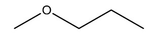

Quando o hidrogênio da hidroxila de alcoóis e fenóis é substituído por um grupo alquil ou aril, temos a classe dos éteres (função éter). Em resumo, éteres são compostos que possuem um átomo de oxigênio ligado a dois radicais orgânicos. Éteres são pouco polares e muito voláteis, sendo solúveis em água quando possuem mais de 4 carbonos por oxigênio.
Éteres são usados como solventes de óleos, gorduras, resinas e na fabricação de seda artificial. Dentre as variadas aplicações dos éteres se destaca sua utilização na medicina que é muito importante, sendo usado como anestésico e na preparação de medicamentos.
Fórmula Molecular do Éter
É aquela que aparece o número dos átomos presentes. Ex: C2H4 = Eteno, CH4 = Metano e etc.
Fórmula Estrutural do Éter
O éter mais conhecido é o éter comum, ou etóxietano ou ainda éter dietílico. Ele é encontrado em farmácia e hospitais. É um líquido muito volátil, com ponto de ebulição em torno de 35°C, muito inflamável, incolor e com odor característico.
Referências: